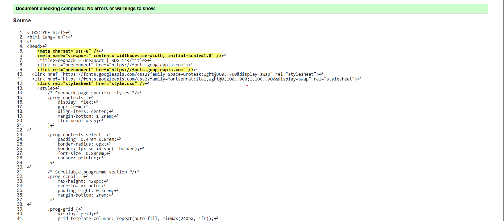
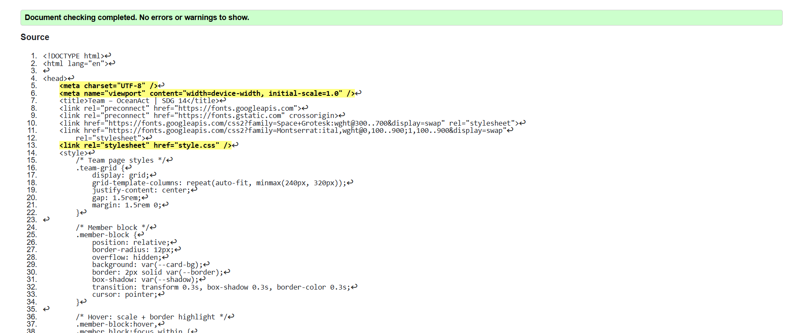
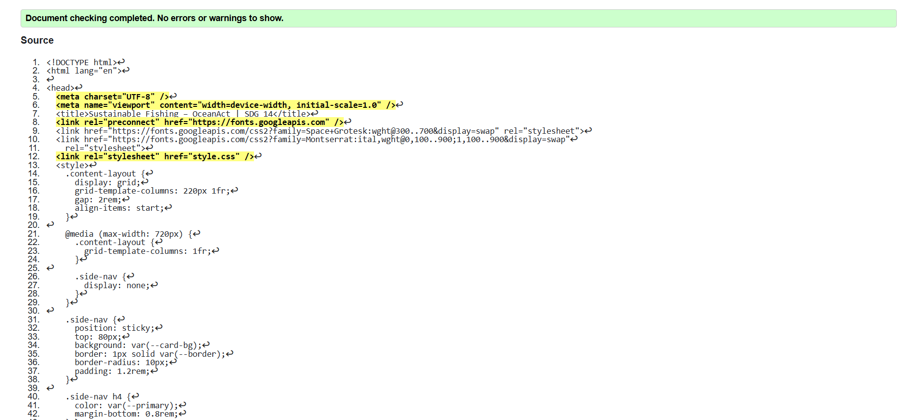
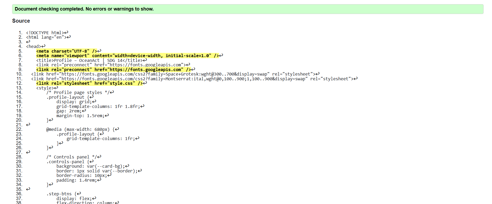
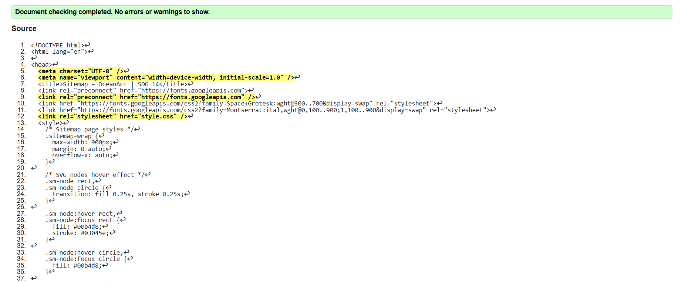

Feedback Page validation report
The first warning during the validation was that there was a duplicate id and a missing alt tag on an ornamental icon. These I worked out by making IDs unique and adding descriptive alt text. This strengthened the need to use unique identifiers in CSS styling as well as accessibility.

Back to Page Editor page
Team Page validation report
Several unclosed div tags were identified during the W3C check. Once fixed, the page
passed
with no errors. I learned that grid-based card layouts can easily become nested incorrectly, so
frequent validation is essential to maintain a clean DOM.

Back to Page Editor page
Content Page validation report
The validator proposed the use of the section elements with correct hierarchy of heading. I adjusted the levels of the headings in order to create a logical hierarchy (H1 > H2 > H3). I understood the direct impact of the valid heading structure on the navigation of the user of a screen reader.

Back to Page Editor page
Profile Page validation report
I had also received a warning about a lack of type attribute on a button and an orphaned label. Once type=button was added and the label correctly matched the input ID the page was all compliant. This made me learn that the form validity begins with strict HTML construction.

Back to Page Editor page
Sitemap Page validation report
The main issue was to make the SVG sitemap available. The title tags within the SVG nodes have been added by the validator. The process helped me to realize that the SVGs have the inner tags requiring a particular set of tags to be interpreted by the assistive devices such as the screen reader.
